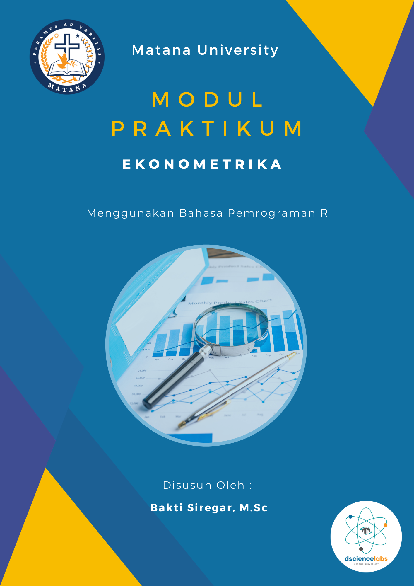

Ekonometrika
2023-11-29
Kata Pengantar
Selamat datang dalam dunia yang menarik dan kompleks dari ekonometrika! Buku ini dirancang untuk memberikan pemahaman mendalam tentang konsep-konsep dasar dan aplikasi praktis dalam analisis ekonometrik. Ekonometrika adalah cabang ilmu ekonomi yang menggabungkan teori ekonomi dengan metode matematika dan statistika untuk menguji hipotesis ekonomi dan membuat prediksi tentang fenomena ekonomi di dunia nyata.
Buku ini disusun dengan tujuan memberikan panduan yang komprehensif, mulai dari dasar-dasar ekonometrika hingga aplikasi canggih yang relevan dengan dunia ekonomi kontemporer. Pembaca akan dibimbing melalui konsep dasar seperti regresi linear, asumsi-asumsi yang mendasari model ekonometrik, hingga teknik-teknik analisis data yang canggih.
Penekanan diberikan pada penerapan ekonometrika dalam konteks ekonomi modern, dengan studi kasus yang relevan dan contoh-contoh aplikatif. Buku ini juga mengintegrasikan perkembangan terkini dalam bidang ekonometrika, memastikan bahwa pembaca mendapatkan wawasan tentang pendekatan-pendekatan terbaru dan perkembangan metodologi.

Sebagai penulis, saya berharap bahwa buku ini tidak hanya akan menjadi sumber referensi yang berharga bagi mahasiswa, akademisi, dan praktisi ekonomi, tetapi juga akan menginspirasi minat dan pemahaman lebih lanjut tentang kompleksitas fenomena ekonomi. Saya ingin mengucapkan terima kasih kepada semua yang telah memberikan kontribusi dan dukungan dalam proses penulisan buku ini.
Ringkasan Materi
Ekonometrika adalah cabang ilmu ekonomi yang menggunakan metode matematika dan statistik untuk menganalisis dan menguji hipotesis dalam konteks ekonomi. Ini menggabungkan konsep ekonomi dengan alat statistik untuk memahami dan memodelkan hubungan ekonomi.
Berikut adalah beberapa topik umum dalam ekonometrika:
Model Regresi: Ekonometrika seringkali dimulai dengan pembelajaran model regresi, di mana hubungan antara satu atau lebih variabel dependen dan independen dijelaskan. Model regresi dapat sederhana atau kompleks tergantung pada data dan masalah yang dihadapi.
Asumsi Regresi: Analisis regresi memerlukan adanya beberapa asumsi, seperti asumsi homoskedastisitas (varians residual konstan), asumsi independensi residual, dan asumsi normalitas residual.
Estimasi Parameter: Menggunakan data empiris, kita dapat mengestimasi parameter dalam model regresi untuk mengetahui seberapa baik model tersebut cocok dengan data.
Uji Hipotesis: Ekonometrika digunakan untuk menguji hipotesis statistik tentang parameter model. Ini membantu menentukan apakah hubungan yang diamati secara signifikan berbeda dari nol.
Multikolinieritas dan Heteroskedastisitas: Beberapa masalah umum dalam analisis regresi melibatkan multikolinieritas (korelasi tinggi antar variabel independen) dan heteroskedastisitas (varians residual tidak konstan). Ekonometrikian mengembangkan metode untuk menangani masalah-masalah ini.
Model Time Series: Ekonometrika juga sering digunakan untuk menganalisis data deret waktu, yang mencakup observasi yang diambil secara berurutan selama waktu tertentu.
Ekonometrika Terapan: Selain model dasar, ekonometrika juga diterapkan dalam berbagai bidang ekonomi, termasuk keuangan, sumber daya manusia, pemasaran, dan lainnya.
Penulis

- Bakti Siregar, M.Sc adalah Ketua Program Studi di Jurusan Statistika Universitas Matana. Lulusan Magister Matematika Terapan dari National Sun Yat Sen University, Taiwan. Beliau juga merupakan dosen dan konsultan Data Scientist di perusahaan-perusahaan ternama seperti JNE, Samora Group, Pertamina, dan lainnya. Beliau memiliki antusiasme khusus dalam mengajar Big Data Analytics, Machine Learning, Optimisasi, dan Analisis Time Series di bidang keuangan dan investasi. Keahliannya juga terlihat dalam penggunaan bahasa pemrograman Statistik seperti R Studio dan Python. Beliau mengaplikasikan sistem basis data MySQL/NoSQL dalam pembelajaran manajemen data, serta mahir dalam menggunakan tools Big Data seperti Spark dan Hadoop. Beberapa project beliau dapat dilihat di link berikut: Rpubs, Github, Website, dan Kaggle.
Ucapan Terima Kasih
Terima kasih kepada rekan-rekan akademisi dan praktisi ekonometrika yang telah berbagi pengetahuan dan wawasan, memberikan masukan yang berharga, serta memberikan inspirasi dalam penyusunan materi ini. Saya juga mengucapkan terima kasih kepada keluarga dan teman-teman yang memberikan dukungan moril dan semangat selama proses penulisan. Kalian adalah sumber kekuatan dan inspirasi bagi saya. Seluruh proses penulisan ini adalah perjalanan yang luar biasa, dan saya berharap ebook ini dapat memberikan manfaat bagi pembaca, baik mereka yang sedang mempelajari ekonometrika untuk pertama kalinya maupun mereka yang ingin meningkatkan pemahaman mereka.
Akhir kata, terima kasih kepada tim penerbit yang telah bekerja keras dalam proses produksi ebook ini. Semoga ebook ini menjadi sumber referensi yang bermanfaat dan dapat turut berkontribusi dalam perkembangan studi ekonometrika.
Masukan & Saran
Semua masukan dan tanggapan Anda sangat berarti bagi kami untuk memperbaiki template ini kedepannya. Bagi para pembaca/pengguna yang ingin menyampaikan masukan dan tanggapan, dipersilahkan melalui kontak dibawak ini!
Email: dsciencelabs@outlook.com